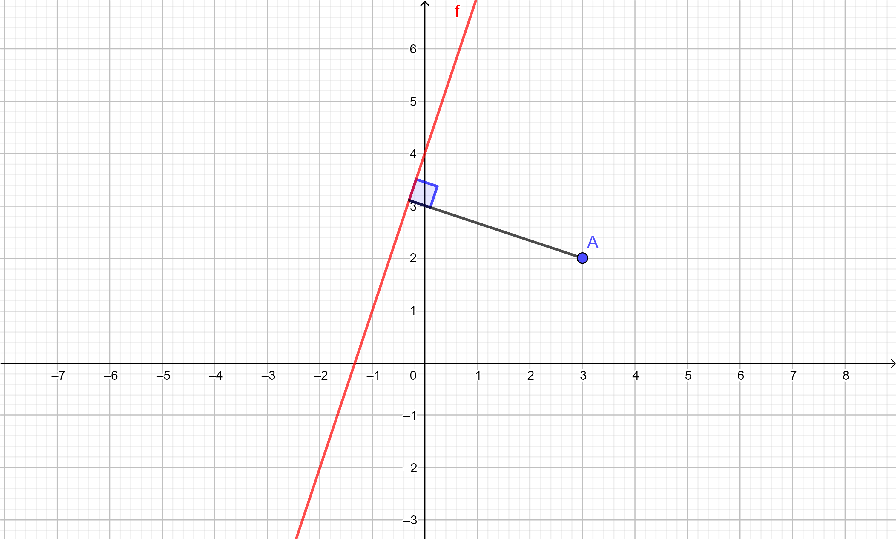

Compiti per casa
Da studiare
Di seguito l'elenco degli argomenti svolti fino ad ora.
-
1) Il piano cartesiano (link)
-
2) Equazione della retta (link)
-
3) Retta passante per due punti (link)
-
4) Posizione reciproca tra rette (link)
-
5) Insiemi di rette dipendenti da un parametro (link)
-
6) Distanza tra due punti (link)
Esercizio 1
Trovare la distanza tra il punto \(A\left(3\,;\,2\right)\) e la retta di equazione \(y = 3x + 4\)

Soluzione:
\(\dfrac{9\sqrt{10}}{10}\)
Esercizio 2
Dati il punto \(\color{blue}{A \left(-3\,;\,1\right)} \) e la retta \(\color{red}{r}\) di equazione \(\color{red}{y = -\dfrac{1}{4}x -1}\)
-
Trovare l'equazione della retta \(s\) perpendicolare ad \(\color{red}{r}\) e passante per \(\color{blue}{A}\).
-
Trovare il punto \(B\) d'intersezione tra le rette \(r\) ed \(s\).
-
Calcolare la distanza tra i punti \(A\) e \(B\).
Soluzione:
-
La retta \(s\) ha equazione
\[y = 4x + 13\]
-
Il punto \(B\) ha coordinate \(\left(-\dfrac{56}{17}\,;\,-\dfrac{3}{17}\right)\)
-
La distanza tra \(A\) e \(B\) è \(\dfrac{5\sqrt{17}}{17}\)